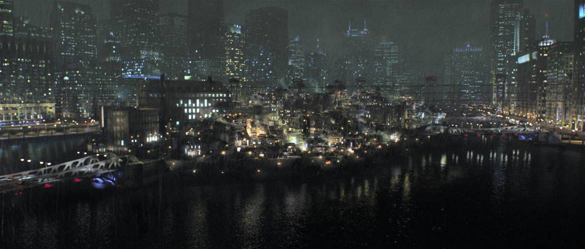
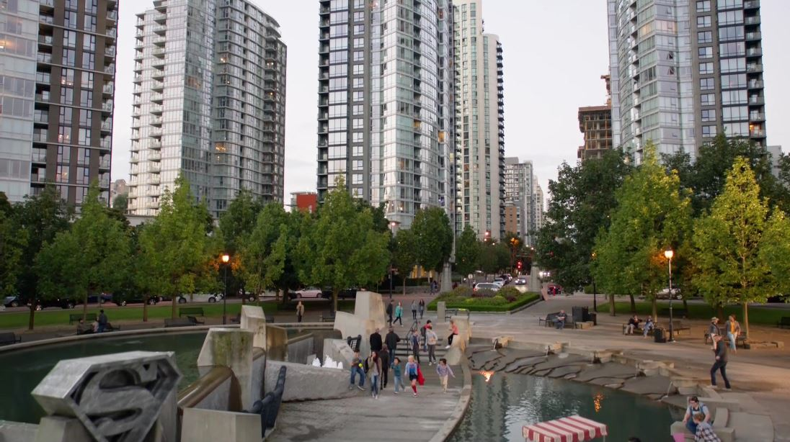
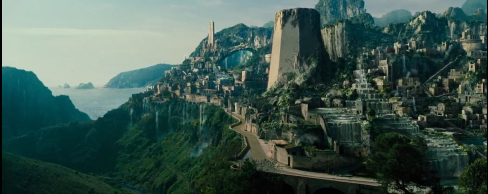
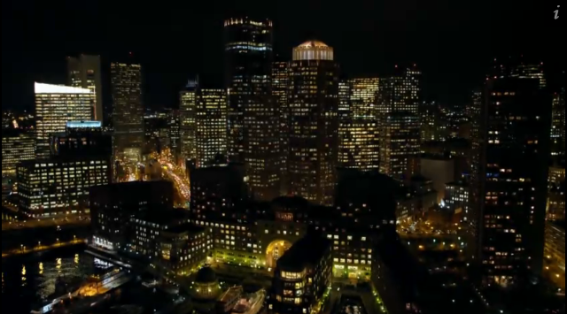

The comfort of a flight. Pro tip: Keep your hands inside the window!
Departing city from: Gotham
The origins of Gotham City are some shrouded in mystery. Many millenniums ago, an evil warlock was buried alive beneath what would one day become the central island of Gotham. It is alleged that while the warlock laid in a state of torpor, his evil essence seeped into the soil, poisoning the ground with his dark, corrupt touch. By the warlock's own reasoning, he claims that he fathered the modern spirit of Gotham City and has even taken to calling himself Doctor Gotham.
Departing from city: Metropolis
Metropolis is one of the largest and most well-known cities in the United States, owing largely to the fact that it is the adopted home town of Metropolis' favorite son, Superman. The history of Metropolis stretches back to the year 1542 when Italian navigator Vincenzo Gnanatti discovered the region while in the employ of the Dutch. Prior to European colonization, the region was occupied by the Algonquin Native American tribe. It wasn't until 1634 however that the first settlement was established by Dutchman Paul De Vries. The settlement was named De Vries Village and occupies the neighborhood now known as "Old City" in the Eastern section of Queensland Park. Throughout the 17th and 18th centuries, De Vries Village prospered as a thriving seaport and it became an integral strategic location for General George Washington's army during the Revolutionary War.
Departing from city: Themyscira
Themyscira is a fictional, lush island nation on Earth, appearing in American comic books published by DC Comics. The island is the place of origin of Wonder Woman and her sister Amazons. Originally known as Paradise Island, it was renamed "Themyscira". The island is named after the mythological city of Themiscyra, the capital of the Amazon tribe in Greek mythology. It is also sometimes presented that Themyscira is the capital city and Paradise Island is the entire island nation.
Departing from city: Central City
While there are many Central Cities in the real United States, the one that Barry Allen runs around in both comics and CW TV show is a fictional city located on the edge of the state of Missouri (as per not only current comic book continuity, but also references in The Flash TV show and Young Justice animated series), although it once belonged in Ohio (1974's The Flash No. 228 and 1987's The Flash Vol. 2 No. 2 both made that claim) and, in 2004's DC: The New Frontier, in Illinois. Its real-world analog would be Kansas City, given that Central City is paired with Keystone City, which exists just across the water in Kansas. Quite how that works with the oft-stated assertion that Central City and Star City are only 600 miles apart is anyone's guess (Kansas City is around 1,500 miles from San Francisco). Let's just pretend that, while DC's comic book Earth is larger than ours, the CW's Arrow/Flashverse United States is somehow smaller. Or, perhaps, has a surprisingly different geography with regards to where the states actually lie in relation to each other.
Departing from city: Star City
DC's other home to fake tales of San Francisco is Green Arrow's hometown — temporarily renamed Starling City in the early seasons of the CW's Arrow, although it's been called Star City in comic book mythology since its 1941 introduction in More Fun Comics No. 73. A port city located somewhere on the west coast of the United States in its current comic book incarnation, its location hasn't always been so clear; 1985's DC Comics Presents No. 87 saw Superman cross over to our world and note that Star City had been replaced by Boston, while earlier references to its comic book location had suggested both Connecticut and somewhere in the region of the Great Lakes. (To make the matter more complicated, an onscreen map that appeared on an episode of Arrow suggested that Star City was actually Des Moines, Iowa, even though the show has repeated talked about the city being on the Western Seaboard.)
Arriving to city: Gotham
The origins of Gotham City are some shrouded in mystery. Many millenniums ago, an evil warlock was buried alive beneath what would one day become the central island of Gotham. It is alleged that while the warlock laid in a state of torpor, his evil essence seeped into the soil, poisoning the ground with his dark, corrupt touch. By the warlock's own reasoning, he claims that he fathered the modern spirit of Gotham City and has even taken to calling himself Doctor Gotham.
Arriving to city: Metropolis
Metropolis is one of the largest and most well-known cities in the United States, owing largely to the fact that it is the adopted home town of Metropolis' favorite son, Superman. The history of Metropolis stretches back to the year 1542 when Italian navigator Vincenzo Gnanatti discovered the region while in the employ of the Dutch. Prior to European colonization, the region was occupied by the Algonquin Native American tribe. It wasn't until 1634 however that the first settlement was established by Dutchman Paul De Vries. The settlement was named De Vries Village and occupies the neighborhood now known as "Old City" in the Eastern section of Queensland Park. Throughout the 17th and 18th centuries, De Vries Village prospered as a thriving seaport and it became an integral strategic location for General George Washington's army during the Revolutionary War.
Arriving to city: Themyscira
Themyscira is a fictional, lush island nation on Earth, appearing in American comic books published by DC Comics. The island is the place of origin of Wonder Woman and her sister Amazons. Originally known as Paradise Island, it was renamed "Themyscira". The island is named after the mythological city of Themiscyra, the capital of the Amazon tribe in Greek mythology. It is also sometimes presented that Themyscira is the capital city and Paradise Island is the entire island nation.
Arriving to city: Central City
While there are many Central Cities in the real United States, the one that Barry Allen runs around in both comics and CW TV show is a fictional city located on the edge of the state of Missouri (as per not only current comic book continuity, but also references in The Flash TV show and Young Justice animated series), although it once belonged in Ohio (1974's The Flash No. 228 and 1987's The Flash Vol. 2 No. 2 both made that claim) and, in 2004's DC: The New Frontier, in Illinois. Its real-world analog would be Kansas City, given that Central City is paired with Keystone City, which exists just across the water in Kansas. Quite how that works with the oft-stated assertion that Central City and Star City are only 600 miles apart is anyone's guess (Kansas City is around 1,500 miles from San Francisco). Let's just pretend that, while DC's comic book Earth is larger than ours, the CW's Arrow/Flashverse United States is somehow smaller. Or, perhaps, has a surprisingly different geography with regards to where the states actually lie in relation to each other.
Arriving to city: Star City
DC's other home to fake tales of San Francisco is Green Arrow's hometown — temporarily renamed Starling City in the early seasons of the CW's Arrow, although it's been called Star City in comic book mythology since its 1941 introduction in More Fun Comics No. 73. A port city located somewhere on the west coast of the United States in its current comic book incarnation, its location hasn't always been so clear; 1985's DC Comics Presents No. 87 saw Superman cross over to our world and note that Star City had been replaced by Boston, while earlier references to its comic book location had suggested both Connecticut and somewhere in the region of the Great Lakes. (To make the matter more complicated, an onscreen map that appeared on an episode of Arrow suggested that Star City was actually Des Moines, Iowa, even though the show has repeated talked about the city being on the Western Seaboard.)